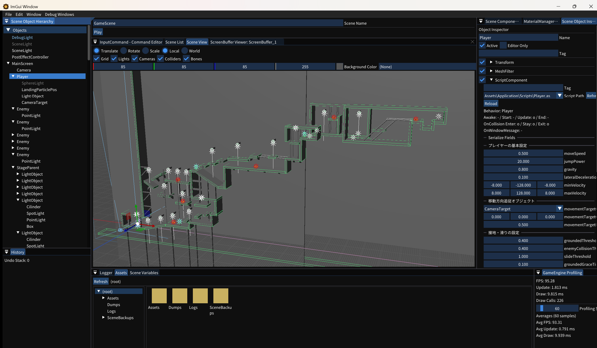

6. スクリプトを書く
AngelScript ファイルを作成し、エディターの Inspector から ScriptComponent として Player に割り当てます。

1. スクリプトファイルを用意する
Assets/Application/Scripts/にSimpleMover.asを作成します。- 次のコードを保存します。コマンド名は既存設定に合わせて
PlayerMoveLeft/PlayerMoveRightを使用します。
// Assets/Application/Scripts/SimpleMover.as
class SimpleMover : ScriptComponentBehavior {
[SerializeField, Tooltip("移動速度")]
float moveSpeed = 2.0f;
void Update() {
const float dt = GetDeltaTime() * GetGameSpeed();
float moveDirection = 0.0f;
if (IsCommandTriggered("PlayerMoveLeft"))
moveDirection = GetCommandValue("PlayerMoveLeft");
if (IsCommandTriggered("PlayerMoveRight"))
moveDirection = GetCommandValue("PlayerMoveRight");
Transform@ tf = GetTransform();
Vector3 pos = tf.GetTranslate();
pos.x += moveDirection * moveSpeed * dt;
tf.SetTranslate(pos);
}
}2. Player に割り当てる
- Hierarchy で Player を選択します。
- Inspector 下部の Add Component → ScriptComponent を選択します。
- スクリプト一覧を更新するRefresh List を押し、Script Path で
Assets\Application\Scripts\SimpleMover.asを選択します。 - スクリプトを読み込むReload を押し、Behavior とライフサイクル関数が認識されたことを確認します。
Assets ウィンドウで
SimpleMover.as を ScriptComponent の Script Path へドラッグ＆ドロップしても割り当てられます。この場合はリロードまで自動で行われます。3. Inspector で値を調整する
[SerializeField] を付けた moveSpeed は ScriptComponent 内に表示されます。まず 2.0 のまま Play し、停止後に値を変えて動きの差を確認してください。スクリプトを編集した後は Reload で再コンパイルできます。
既存の
Assets/Application/Scripts/Player.as には、移動・ジャンプ・被ダメージ・チェックポイント復帰まで含まれています。API とライフサイクルの詳細は スクリプティングのリファレンス を参照してください。